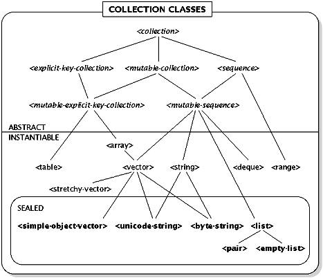

This section describes the design of the classes of aggregate data structures (collections). In addition to the concrete classes provided by the Dylan language, the heterarchy for collection classes contains several abstract classes, each of which embodies some particular behavior, usually expressed as a protocol of generic functions. Every subclass of an abstract class implements every generic function of the corresponding protocol.
The following diagram shows the collection class heterarchy. Abstract classes are shown in italic and sealed classes are shown in bold.

Picture 1
Functions for Collections
The Dylan run-time system provides default implementations for all of the functions described in this section.
See Also: Dylan Design Notes: Collection Class-For-Copy (Clarification)
See Also: Dylan Design Notes: Psuedo-Generic Mappers
The default implementation of map returns a collection whose value is an instance of the class-for-copy value of collection. More specific methods for map may choose to return a collection whose class is determined by different means.
==> new-collection
mutable-collection may be the same as collection or any of the more-collections.
The skip argument (default 0) indicates that the first skip matching elements should be ignored. If skip or fewer elements of collection satisfy predicate, then failure is returned.
If mutable-collection is a mutable sequence, then start and end keywords may be specified to indicate that only a part of the sequence should be filled. start is considered an inclusive bound and defaults to 0; end is an exclusive bound and defaults to the length of the sequence.
The Dylan run-time system provides default implementations for all of the functions described in this section.
In the following function descriptions, when a test argument is specified, the test argument may be non-commutative; it will always be called with its arguments in the same order as they appear in the sequence.
The default methods for add, add-new[next citation], remove[next citation], choose[next citation], choose-by[next citation], intersection[next citation], union[next citation], remove-duplicates[next citation], copy-sequence[next citation], concatenate[next citation], reverse[next citation], and sort[next citation] all return new sequences that are instances of the class-for-copy[next citation] of the primary sequence argument. However, more specialized methods are permitted to choose a more appropriate result class; for example, copy-sequence of a range returns another range, even though the class-for-copy value of a range is the <list> class.
If new-element is not already a member of sequence (as determined by the test function, which defaults to id?), then add-new operates just as add would. If new-element is already a member of sequence, then sequence is returned. sequence is never modified by this operation. The test function may be non-commutative: it is always called with an element from sequence as its first argument and new-element as its second argument.
reverse creates a new sequence containing the same elements as sequence, but in reverse order. The result is generally of the same class as the sequence argument.
See Also: Dylan Design Notes: First, Second, Third are Functions (Change)
See Also: Dylan Design Notes: Last-Setter (Addition)
size[next citation] collection ==> {integer or #f} [Generic Function]
size returns the number of keys contained in collection. A default method is provided by the Dylan run-time system which simply counts while iterating through the collection. size may return #f for collections of unbounded size.
class-for-copy[next citation] mutable-collection ==> class [G.F. Method]
class-for-copy returns an appropriate collection class for creating mutable copies of the argument. For collections that are already mutable, the collections actual class is generally the most appropriate, so the <object> method of class-for-copy can be used. The class-for-copy value of a sequence should be a subclass of <sequence>, and the class-for-copy value of an explicit-key-collection should be a subclass of <explicit-key-collection>.
empty collection ==> boolean [Generic Function]
Returns #t if collection contains no elements, and #f otherwise.
do procedure collection #rest more-collections [Generic Function]
==> false
do applies procedure to corresponding elements of all the collections. Returns #f. If all the collections are sequences, do guarantees that they will be processed in their natural order.
? (do (method (a b) (print (+ a b)))
'(100 100 200 200)
'(1 2 3 4))
101
102
203
204
#f
map procedure collection #rest more-collections [Generic Function]
==> new-collection
map creates a new collection whose elements are obtained by calling procedure on corresponding elements of all the collection arguments. If all the collections are sequences, processing is performed in the natural order.
? (map +
'(100 100 200 200)
'(1 2 3 4))
(101 102 203 204)
map-as class procedure collection #rest more-collections [Generic Function]
map-as creates a new collection of class class whose elements are obtained by applying procedure to corresponding elements of the collection arguments. class must be a subclass of <mutable-collection> and acceptable as the required argument to make. If all the collections are sequences (including the created collection), processing is done in the natural order.
? (map-as <vector> +
'(100 100 200 200)
'(1 2 3 4))
#(101 102 203 204)
map-into[next citation] mutable-collection procedure [Generic Function]
collection #rest more-collections
==> mutable-collection
map-into returns the mutable-collection argument after modifying it by replacing its elements with the results of applying procedure to corresponding elements of collection and more-collections. If mutable-collection and all the other collections are sequences, processing is done in the natural order.
? (define x '(100 100 200 200))
x
? (map-into x + '(1 2 3 4))
(101 102 203 204)
? x
(101 102 203 204)
any? procedure collection #rest more-collections [Generic Function]
==> value
If procedure returns a value other than #f when applied to some group of corresponding elements of collection and more-collections, then any? returns the (first) value returned by procedure. Otherwise, if procedure returns #f when applied to every such group, then any? returns #f. If all the collection arguments are sequences, any? operates in natural order. In all cases, any? stops on the first true value returned by procedure.
? (any? > '(1 2 3 4) '(5 4 3 2))
#t
? (any? even? '(1 3 5 7))
#f
every? procedure collection #rest more-collections [Generic Function]
==> boolean
every? is similar to any?, but every? returns #f if procedure ever returns #f and otherwise returns #t.
? (every? > '(1 2 3 4) '(5 4 3 2))
#f
? (every? odd? '(1 3 5 7))
#t
reduce procedure initial-value collection ==> value [Generic Function]
procedure is a binary function used to combine all the elements of collection into a single value. If collection is empty, reduce returns initial-value; otherwise, procedure is applied to initial-value and the first element of collection to produce a new value. If more elements remain in the collection, then procedure is called again, this time with the value from the previous application and the next element from collection. This process continues until all elements of collection have been processed. Processing is always done in the natural order for collection.
? (define high-score 10)
high-score
? (reduce max high-score '(3 1 4 1 5 9))
10
? (reduce max high-score '(3 12 9 8 8 6))
12
reduce1 procedure collection ==> value [Generic Function]
reduce1 is just like reduce, except that the first element of collection is taken as an initial value, and all the remaining elements of collection are processed as if by reduce. (In other words, the first value isnt used twice.) For unstable collections, first element effectively means an element chosen at random. It is an error for collection to be an empty collection. Processing is done in the natural order for collection.
? (reduce1 + '(1 2 3 4 5))
15
member?[next citation] value collection #key test ==> boolean [Generic Function]
member? returns a true value if and only if collection contains value (as determined by test, which defaults to id?). Methods for specific collection classes (most notably lists) may provide a more useful true value. The test function may be non-commutative: it is always called with value as its first argument and an element from collection as its second argument.
? (define flavors #(chocolate pistachio pumpkin))
flavors
? (member? 'chocolate flavors)
#t
? (member? 'banana flavors)
#f
find-key collection procedure #key skip failure ==> key [Generic Function]
This function returns a key value such that (procedure (element collection key)) is true. If no element in the collection satisfies procedure, it returns failure (default #f).
? flavors
(chocolate pistachio pumpkin)
? (find-key flavors has-nuts?)
1
? (element flavors 1)
pistachio
This function replaces those elements of mutable-collection for which predicate returns true. The element are replaced with the value of calling new-value-fn on the element. If count is specified, no more than count elements are replaced.
? (define numbers (list 10 13 16 19))
numbers
? (replace-elements! numbers odd? double)
(10 26 16 38)
fill! alters mutable-collection so that (element mutable-collection key) returns value for every key.
? (define x (list 'a 'b 'c 'd 'e 'f))
x
? (fill! x 3 :start 2)
(a b 3 3 3 3)
Functions for Sequences
add returns a new sequence that contains new-element and all the elements of sequence. The resultant sequences size is one greater than the size of sequence. The resultant sequence shares no structure with sequence, and sequence will be unmodified. The generic function add doesnt specify where the new element will be added, although individual methods may do so.
? (define numbers '(3 4 5))
numbers
? (add numbers 1)
(1 3 4 5)
? numbers
(3 4 5)
add! returns a sequence made from sequence that includes new-element. The result may or may not be id? to the original sequence. The size of the resultant is one greater than the size of sequence. sequence may be modified as a side effect of this operation. The resultant sequence may share structure with sequence.
? (define numbers (list 3 4 5))
numbers
? (add! numbers 1)
(1 3 4 5)
add-new[return to first citation] sequence new-element #key test ==> new-sequence [Generic Function]
? (add-new '(3 4 5) 1)
(1 3 4 5)
? (add-new '(3 4 5) 4)
(3 4 5)
If new-element is not already a member of sequence (as determined by the test function, which defaults to id?), then add-new! operates just as add! would. If new-element is already a member of sequence, then sequence is returned. sequence may be modified by this operation. The test function may be non-commutative: it is always called with an element from sequence as its first argument and new-element as its second argument.
? (add-new! (list 3 4 5) 1)
(1 3 4 5)
? (add-new! (list 3 4 5) 4)
(3 4 5)
remove returns a new sequence consisting of the elements of sequence not equal to value. test, which defaults to id?, is a function which determines whether an element is equal to value. If count is specified, then no more than count copies of value are removed (so additional elements equal to value might remain). The resultant sequence may share no structure with sequence and sequence will not be modified by this operation. The test function may be non-commutative: it is always called with an element from sequence as its first argument and value as its second argument.
? (remove '(3 1 4 1 5 9) 1)
(3 4 5 9)
remove! returns a sequence consisting of the elements of sequence which are not equal to value. test, which defaults to id?, is a function which determines whether an element is equal to value. If count is specified, then no more than count copies of value are removed (so additional elements equal to value might remain). The resultant sequence may or may not be id? to sequence and may share structure with sequence. sequence may be modified by this operation. The test function may be non-commutative: it is always called with an element from sequence as its first argument and value as its second argument.
? (remove! (list 3 1 4 1 5 9) 1)
(3 4 5 9)
choose[return to first citation] predicate sequence ==> new-sequence [Generic Function]
choose returns a new sequence containing only those elements of sequence that satisfy predicate.
? (choose even? '(3 1 4 1 5 9))
(4)
choose-by[return to first citation] predicate test-sequence value-sequence [Generic Function]
==> new-sequence
choose-by returns a new sequence formed of elements from value-sequence whose corresponding elements in test-sequence satisfy predicate.
? (choose-by even? (range from: 1)
'(a b c d e f g h i))
(b d f h)
intersection[next citation] sequence1 sequence2 #key test [Generic Function]
==> new-sequence
intersection returns a new sequence containing only those elements of sequence1 that also appear in sequence2. test, which defaults to id?, is used to determine whether an element appears in sequence2. It is always called with an element of sequence1 as its first argument and an element from sequence2 as its second argument. The order of elements in the result sequence is not specified. The result sequence may or may not share structure with the argument sequences.
? (intersection '(john paul george ringo)
'(richard george edward charles john))
(john george)
See Also: Dylan Design Notes: Union Allows Duplicates (Clarification)
union[return to first citation] sequence1 sequence2 #key test ==> new-sequence [Generic Function]
union returns a new sequence containing all the elements of sequence1 and sequence2, with no duplicates. test, which defaults to id?, is used for all comparisons. It is always called with an element from sequence1 as its first argument and an element from sequence2 as its second argument. The order of elements in the result is not specified. The result sequence may or may not share structure with the argument sequences.
? (union '(butter flour sugar salt eggs)
'(eggs butter mushrooms onions salt))
(salt butter flour sugar eggs mushrooms onions)
remove-duplicates[return to first citation] sequence #key test ==> new-sequence [Generic Function]
This function returns a new sequence that contains all the unique elements from sequence but no duplicate elements. The result shares no structure with sequence, and sequence will not be modified by the operation. test , which defaults to id?, is the function used to determine whether one element is a duplicate of another. The test argument may be non-commutative; it will always be called with its arguments in the same order as they appear in sequence.
? (remove-duplicates '(spam eggs spam sausage spam spam spam))
(spam eggs sausage)
remove-duplicates! sequence1 #key test ==> sequence2 [Generic Function]
This function returns a sequence that contains all the unique elements from sequence but no duplicate elements. The result may or may not share structure with sequence, the result may or may not be id? to sequence, and sequence may or may not be modified by the operation. test , which defaults to id?, is the function used to determine whether one element is a duplicate of another. The test argument may be non-commutative; it will always be called with its arguments in the same order as they appear in sequence.
? (remove-duplicates! '(spam eggs spam sausage spam spam))
(spam eggs sausage)
copy-sequence[next citation] source #key start end ==> new-sequence [Generic Function]
copy-sequence creates a new sequence containing the elements of source between start (default 0) and end (which defaults to the size of source).
? (define hamlet '(to be or not to be))
hamlet
? (id? hamlet (copy-sequence hamlet))
#f
? (copy-sequence hamlet start: 2 end: 4)
(or not)
See Also: Dylan Design Notes: Psuedo-Generic Mappers
concatenate-as returns a new sequence, of class class, containing all the elements of all the sequences, in order. class must be a subclass of <mutable-sequence> and acceptable as the required argument to make.
? (concatenate-as <string> '(#\n #\o #\n) '(#\f #\a #t))
"nonfat"
? (concatenate-as <vector> '(0 1 2) '(3 4 5) '(6 7 8))
#(0 1 2 3 4 5 6 7 8)
concatenate returns a new sequence containing all the elements of all the sequences, in order.
? (concatenate "low-" "calorie")
"low-calorie"
? (concatenate '(0 1 2) '(3 4 5) '(6 7 8))
(0 1 2 3 4 5 6 7 8)
See Also: Dylan Design Notes: Replace-Subsequence! Different Sizes (Change)
replace-subsequence! mutable-sequence insert-sequence [Generic Function]
#key start
==> sequence
This function overwrites elements of a subsequence of mutable-sequence with the corresponding elements of insert-sequence. The subsequence to be overwritten begins at index start (default 0). An error is signaled if mutable-sequence does not contain enough elements starting at start to accommodate all the elements of sequence.
? (define phrase "I hate oatmeal.")
phrase
? (replace-subsequence! phrase "like" start: 2)
"I like oatmeal."
reverse[next citation] sequence ==> new-sequence [Generic Function]
? (define x '(bim bam boom))
x
? (reverse x)
(boom bam bim)
? x
(bim bam boom)
reverse![next citation] sequence1 ==> sequence2 [Generic Function]
reverse! returns a sequence containing the same elements as sequence, but in reverse order, possibly reusing sequences storage to hold the result. Even if the storage is recycled, the result may or may not be id? to sequence.
? (reverse! '(bim bam boom))
(boom bam bim)
sort[return to first citation] sequence #key test stable ==> new-sequence [Generic Function]
sort returns a new sequence containing the elements of sequence sorted into ascending order. test, which defaults to <, is used to determine what an ascending order is. If stable is supplied and not #f, a possibly slower algorithm will be used that will leave in their original order any two elements, x and y, such that (test x y) and (test y x) are both false.
? (define numbers '(3 1 4 1 5 9))
numbers
? (sort numbers)
(1 1 3 4 5 9)
? numbers
(3 1 4 1 5 9)
sort![next citation] sequence1 #key test stable ==> sequence2 [Generic Function]
This function is like sort, but may reuse the storage from sequence to form the result. The result may or may not be id? to sequence.
? (sort! '(3 1 4 1 5 9))
(1 1 3 4 5 9)
See Also: Dylan Design Notes: First, Second, Third, Last (Addition)
first sequence ==> value [Generic Function]
second sequence ==> value [Generic Function]
third sequence ==> value [Generic Function]
Each of these functions returns the indicated element of the sequence.
(setter first) sequence new-value ==> new-value [Generic Function]
(setter second) sequence new-value ==> new-value [Generic Function]
(setter third) sequence new-value ==> new-value [Generic Function]
Each of these functions sets the indicated element of the sequence and returns the new-value.
last sequence ==> value [Generic Function]
last returns the last element of sequence. It is an error for sequence to be empty. last of a sequence of unbounded size may or may not terminate.
? (last '(emperor of china))
china
subsequence-position big pattern #key test count ==> index [Generic Function]
This function searches big for a subsequence that is element-for-element equal to pattern, as determined by the test argument (which defaults to id?). That is, test is applied to corresponding elements of the pattern and the subsequence of big to determine whether a match has occurred. If count is specified, then the countth such subsequence is selected. If a subsequence is found, returns the index at which the subsequence starts; otherwise, returns #f.
? (subsequence-position "Ralph Waldo Emerson" "Waldo")
6 Wheres Waldo
See Also: Dylan Design Notes: Psuedo-Generic Mappers (Change)
The Instantiable Collection Classes
The Dylan language provides several standard instantiable collection classes, in addition to classes the user might wish to add. Each provides unique capabilities, strengths, and weaknesses.
See Also: Dylan Design Notes: Make Range (Change)
An error is signaled if any index is out of bounds, or if there are the wrong number of indices.
An error is signaled if any index is out of bounds, or if there are the wrong number of indices.
<array> [Instantiable Class]
This class supports constant time access to elements indexed (keyed) by a sequence of integers. Arrays are stable under iteration. make of <array> supports the keywords dimensions: and fill:. dimensions: is required and must be a sequence of non-negative integers. fill: (default #f) specifies the initial value to be placed in all elements of the array.
<byte-string> [Sealed Instantiable Class]
This sealed subclass of <vector> provides efficient storage for elements that are eight-bit characters. It also inherits lexicographic ordering from the <string> class. make of <byte-string> supports the keywords size: and fill:. size: (default 0) tells how large a <byte-string> to create; fill: specifies the initial value of every element.
<deque> [Instantiable Class]
This subclass of <mutable-sequence> provides default implementation for double-ended queues. make of <deque> supports the keywords size: and fill:. size: (default 0) tells how large a <deque> to create; fill: (default #f) specifies the initial value of every element.
<list> [Sealed Instantiable Class]
This sealed subclass of <sequence> provides efficient support for linked lists. make of <list> supports the keywords size: and fill:. size: (default 0) tells how large a <list> to create; fill: (default #f) specifies the initial value of every element.
<range> [Instantiable Class]
A subclass of <sequence> that represents arithmetic sequences. Some ranges can be infinitely large. A <range> is normally created by a call to the range function, rather than by a direct call to make.
<simple-object-vector> [Sealed Instantiable Class]
This sealed subclass of <vector> supports elements of any class. make of <simple-object-vector> supports the keywords size: and fill:. size: (default 0) specifies the initial size of the <simple-object-vector> fill: (default #f) specifies the initial value of every element.
<stretchy-vector> [Instantiable Class]
This subclass of <vector> supports elements of any class, and has the property that it can grow and shrink to accommodate adding or removing elements. make of <stretchy-vector> supports the keywords size:, fill:. size: (default 0) tells how large a <stretchy-vector> to create; fill: (default #f) specifies the initial value of every element.
<string> [Instantiable Class]
A subclass of <sequence> whose elements are all characters. <string> supports lexicographic comparison. <string> has no direct instances; calling make on <string> will return an instance of a concrete subclass of <string>.
<table> [Instantiable Class]
Also called a hashtable, a table is an unordered mapping between arbitrary keys and elements. Tables are the only predefined collections that are unstable under iteration.
<unicode-string> [Sealed Instantiable Class]
This sealed subclass of <vector> provides efficient storage for elements that are sixteen-bit Unicode characters. It inherits lexicographic ordering from the <string> class. make of <unicode-string> supports the keywords size: and fill:. size: tells how large a <unicode-string> to create; fill: (default #\space) specifies the initial value of every element.
<vector> [Instantiable Class]
Vectors are one-dimensional arrays and offer constant time random access to elements. <vector> has no direct instances; calling make on <vector> returns an instance of <simple-object-vector>.
Operations on Arrays
aref array #rest indices ==> element [Function]
aref accesses the element of array indicated by indices. The number of indices given must equal the rank of the array (the number of dimensions of the array).
? (aref #(7 8 9) 1)
8
(setter aref) array #rest indices-and-new-value ==> new-value [Function]
(setter aref) sets the element of array indicated by indices to new-value and returns new-value. The number of indices given must equal the rank of the array (the number of dimensions of the array).
? (set! (aref #(7 8 9) 1) 5)
#(7 5 9)
? ((setter aref) #(7 8 9) 1 5)
#(7 5 9)
dimensions array ==> sequence [Function]
This function returns the dimensions of array, as a sequence of integers.
? (dimensions (make <array> dimensions: '(4 4)))
(4 4)
element[next citation] array index-sequence #key default ==> element [G.F. Method]
The method for <array> is equivalent to (apply aref array index-sequence), provided index-sequence specifies an array element within the bounds of array. If index-sequence does not specify a valid array element in array, then default is returned if it was specified; otherwise, an error is signaled.
(setter element)[next citation] array index-sequence new-value ==> new-value [G.F. Method]
This function is equivalent to
(apply (setter aref)
array
(concatenate index-sequence (list new-value))
An error is signaled if there is no such element in the array.
See Also: Dylan Design Notes: Size-Setter for Stretchy Sequences (Addition)
Operations on Deques
See Also: Dylan Design Notes: New Iteration Protocol (Change)
push deque new-value ==> deque [Generic Function]
push augments deque by adding new-value to the front of the deque.
pop deque new-value ==> first-element [Generic Function]
pop removes the first element from deque and returns it.
push-last deque new-value ==> deque [Generic Function]
push-last augments deque by adding new-value to the end of the deque.
pop-last deque new-value ==> last-element [Generic Function]
pop-last removes the last element from deque and returns it.
add![next citation] deque new-value ==> deque [G.F. Method]
This method is the same as push. That is, the result is id? to deque, and deque is destructively modified by this operation.
remove![next citation] deque value #key test count ==> deque [G.F. Method]
The result of remove! on a deque is id? to the deque argument. deque is destructively modified by this operation.
previous-state[next citation] deque state ==> state [G.F. Method]
Deques support reversal of an iteration, through the use of previous-state. Iteration is described at the end of this section.
final-state[next citation] deque ==> state [G.F. Method]
By analogy with initial-state, final-state returns an iteration state appropriate for iterating backward through deque. Iteration is described at the end of this section.
See Also: Dylan Design Notes: List Issues (Change)
Operations on Lists
The <list> class is partitioned into two subclasses, <pair> and <empty-list>. The classes <list>, <pair>, and <empty-list> are sealed; users cannot create new subclasses of <list>.
through
cdddr list ==> object [Method]
cons car cdr ==> pair [Method]
cons creates a new pair whose car and cdr values are as indicated.
? (cons 1 2)
(1 . 2)
? (cons 1 '(2 3 4 5))
(1 2 3 4 5)
list #rest args ==> list [Method]
list returns a list of the args, in order.
? (list 1 2 3)
(1 2 3)
? (list (+ 4 3) (- 4 3))
(7 1)
list* #rest args ==> list [Method]
This function is like list, except the last argument is used as the cdr of the last pair constructed.
? (list* 1 2 3 '(4 5 6))
(1 2 3 4 5 6)
car list ==> object [Method]
If list is a pair, this function returns the value of the car slot. Otherwise, list is the empty list, and car returns the empty list.
? (car '(4 5 6))
4
? (car '())
()
cdr list ==> object [Method]
If list is a pair, this function returns the value of the cdr slot. Otherwise, list is the empty list, and cdr returns the empty list.
? (cdr '(4 5 6))
(5 6)
? (cdr '())
()
(setter car) pair object ==> object [Method]
This function sets the car of pair to contain object and returns object.
? (define x '(4 5 6))
(4 5 6)
? (set! (car x) 9)
9
(setter cdr) pair object ==> object [Method]
This function sets the cdr of pair to contain object and returns object.
? (define x '(4 5 6))
(4 5 6)
? (set! (cdr x) '(a b c))
(a b c)
caar list ==> object [Method]
These twelve functions offer a shorthand for compositions of car and cdr operations, for example, (caddr x) is equivalent to (car (cdr (cdr x))).
(setter caar) pair object ==> object [Method]
through
(setter cdddr) pair object ==> object [Method]
These twelve functions offer a shorthand way to set a specified element of a list.
add![next citation] list element ==> pair [G.F. Method]
Equivalent to (cons element list). That is, the result shares structure with list but will not be id? to list.
remove![next citation] list element #key test count==> list [G.F. Method]
remove! destructively modifies list. The result is not necessarily id? to list.
member?[next citation] object list #key test ==> object [G.F. Method]
For lists, member? returns either #f or that tail of list whose car is object, as determined by test.
size[next citation] list ==> {integer or #f} [G.F. Method]
For circular lists, size is guaranteed to terminate and return #f. For non-circular lists, size returns an integer size value.
append list #rest more-lists ==> list [Generic Function]
This function is a list-only version of concatenate. The result list shares structure with the last list argument.
find-pair item list #key test ==> {pair or #f} [Generic Function]
Searches list for an element that is a pair, the car of which must be item. If such a pair is found, it is returned; otherwise, find-pair returns #f. test, which defaults to id?, is the comparison procedure to be used; test is always called with item as its first argument and the car of an element of list as its second argument. An error is signaled if any of the elements of list are not lists.
See Also: Dylan Design Notes: For Loops (Change)
See Also: Dylan Design Notes: Make Range (Change)
Operations on Ranges
up-to specifies an exclusive bound for the range; through specifies an inclusive bound; and size specifies the size of the range. If more than one of these arguments is present, the resultant range is the largest range such that: (a) up-to is not in the range, and no values greater than up-to are in the range; (b) through+by is not in the range, and no values greater than through+by are in the range; and (c) the range contains no more than size elements. If none of up-to, through, and size are specified, the resulting range is unbounded, and has infinitely many elements.
It is permissible to specify a range that runs from a higher value to a lower value by specifying a negative value for by. In this case, the treatment of size, through, and up-to is still as described above, except that greater than should be replaced by less than, that is, through and up-to describe inclusive and exclusive lower bounds, respectively.
See Also: Dylan Design Notes: Member? Intersection Test Arg (Clarification)
See Also: Dylan Design Notes: Member? Intersection Test Arg (Clarification)
range #key from up-to through by size ==> range [Generic Function]
Creates a range. from (default 0) is the first value in the range. by (default 1) is the step between consecutive elements of the range.
member?[next citation] val range ==> boolean [G.F. Method]
member? always terminates when given a range value, even if the range is unbounded.
size[next citation] range ==> size [G.F. Method]
For unbounded ranges, size always terminates and returns #f. For finite ranges, size returns an integer.
copy-sequence[return to first citation] range #key start end ==> new-range [G.F. Method]
When applied to a range, copy-sequence returns another range, even though the class-for-copy of a range is the <list> class.
binary=[return to first citation] range1 range2 ==> boolean [G.F. Method]
When called with two ranges, binary= always terminates, even if one or both ranges are unbounded in size.
reverse[return to first citation] range ==> new-range [G.F. Method]
Reversing a range produces another range. An unbounded range cannot be reversed.
reverse![next citation] range ==> range [G.F. Method]
The result of reverse! on a range is id? to the range argument. An unbounded range cannot be reversed.
intersection[return to first citation] range1 range2 ==> range [G.F. Method]
intersection applied to two ranges produces another range as its result. This method on intersection always terminates, even if one or both ranges are unbounded in size.
See Also: Dylan Design Notes: Size-Setter for Stretchy Sequences (Addition)
Operations on Stretchy Vector
Strings support lexicographic ordering through a shared implementation of binary<:
For variations on string comparison (such as comparisons that ignore case), different comparison operators must be used.
This method is equivalent to (map-into string as-lowercase string).
This method is equivalent to (map as-uppercase string).
This method is equivalent to (map-into string as-uppercase string).
Tables are stretchy, in that they allow the addition and removal of keys, but they are not stretchy sequences (because they are not sequences) and so do not support the functions described in the section on stretchy sequences. <table> is the only predefined class that is stretchy but is not a stretchy sequence.
See Also: Dylan Design Notes: New Iteration Protocol (Change)
All collections implement an iteration protocol that allows iteration to be specified abstractly. Many higher level operations on collections can be defined in terms of only the iteration protocol.
The iteration protocol centers on the notion of a state object for an iteration. Each collection class chooses its own most appropriate representation for an iteration state, and only the functions of the iteration protocol are affected by this choice. For all collections, however, a state of #f is used to indicate that the iteration has completed, i.e., that there are no more elements left in the collection.
Use of the iteration protocol is based on the assumption that the collection over which iteration occurs remains static for the duration of the iteration. That is, arbitrary changes to a mutable collection while an iteration is in progress may cause the iteration to produce incorrect results.
In general, two or more iterations over the same collection are not guaranteed to produce the same values in the same order, even if the collection is unaltered.
The iteration protocol consists of the following four functions:
next-state may or may not modify the state argument; it is an error to use a state value after it has been passed to next-state. For programs which may wish to return to a particular state in an iteration, the function copy-state, described below, is provided.
next-state returns #f if and only if the iteration of the collection has been completed, i.e., there are no other elements of collection to consider.
An example of the use of the iteration protocol is the following definition of a single-argument version of the do function:
A collection is stable under iteration if any two iterations over the collection are guaranteed to produce the same values in the same order (unless, of course, the collection has been modified). A collection that is not stable under iteration is said to be unstable under iteration. stability, under iteration iteration stability
Collections in general are not required to be stable under iteration, although several important subclasses are so required. In particular, sequences, described below, are required to be stable under iteration.
The order in which elements (and keys) are enumerated by the iteration protocol for a particular iteration is known as the natural order for that iteration over the collection. If a collection is stable under iteration, then every iteration over that collection will have the same natural order, and we may speak of the natural order of the collection itself. Most of the higher order operations described below are required to operate in natural order, usually for the purpose of understanding interactions among side effects.
All collections in Dylan are keyed collections, i.e., all collections can be viewed abstractly as partial functions that take keys to elements. (This choice precludes pure sets from being considered collections, although it is straightforward simply to ignore the keys for a collection and consider it simply as a set of elements.) The element function implements this partial mapping of keys to elements:
While all collections are required to implement element, they are not required to do so efficiently. (A default implementation of element is provided by the Dylan run-time system; see the remarks at the end of this section.)
In addition, it is possible to obtain all the keys for a given collection, formed into a sequence collection:
The order in which the keys from collection appear in the key sequence is unspecified if collection is unstable under iteration. In particular, different calls to key-sequence with the same argument may yield differently ordered key sequences. If collection is stable under iteration, however, the resulting sequence of keys will be in the natural order for collection.
Iterating through a collection often involves examining keys as well as elements. To allow some freedom of implementation, the protocol recognizes two strategies for associating keys with states of iteration: explicitly or implicitly. The distinction between these strategies gives rise to two covering subclasses of <collection>. Every concrete subclass of <collection> must also be a subclass of either <explicit-key-collection> or <sequence> (or both):
See Also: Dylan Design Notes: New Iteration Protocol (Change)
The Dylan run-time system provides the following default implementation of key-sequence for <explicit-key-collection>:
Sequences must be stable under iteration, and the iteration order must match the order of keys. Thus, the key associated with a sequences iteration state can be determined by keeping a counter in parallel with the iteration state, as in the next example.
Since every collection must be a sequence or an explicit-key-collection, it is always possible to keep track of keys during an iteration by defining appropriate methods on <sequence> and <explicit-key-collection>. FN30 For example, consider these two methods for a function that applies a function f to each key-and-element pair in a collection. The method on <explicit-key-collection> uses current-key; the method on <sequence> keeps a counter alongside the state during the iteration:
add![return to first citation] stretchy-vector new-element ==> stretchy-vector [G.F. Method]
add! adds new-element at the end of stretchy-vector. The result is id? to stretchy-vector, and stretchy-vector is destructively modified by this operation.
remove![return to first citation] stretchy-vector element #key test count ==> stretchy-vector [G.F. Method]
The result of remove! on a stretchy vector is id? to stretchy-vector, and stretchy-vector is destructively modified by this operation.
Operations on Strings
binary<[return to first citation] string1 string2 ==> boolean [G.F. Method]
When both arguments are strings, binary< compares strings lexicographically, using binary< on corresponding elements. If one string is a strict prefix of the other, the shorter string is considered the smaller one.
as-lowercase[next citation] string ==> new-string [G.F. Method]
This method is equivalent to (map as-lowercase string).
? (define x "Van Gogh")
x
? (as-lowercase x)
"van gogh"
as-lowercase! string ==> string [G.F. Method]
? (define x "Van Gogh")
x
? (as-lowercase! x)
"van gogh"
as-uppercase[next citation] string ==> new-string [G.F. Method]
? (define x "Van Gogh")
x
? (as-uppercase x)
"VAN GOGH"
as-uppercase! string ==> string [G.F. Method]
? (define x "Van Gogh")
x
? (as-uppercase x)
"VAN GOGH"
Operations on Tables
remove-key! table key ==> table [Generic Function]
remove-key! modifies table so that it no longer has a key equal to key. Equality is determined by the tables test function.
(setter element)[next citation] table key new-value [G. F. Method]
Even if no element with the given key exists, (setter element) for a table will add key and new-value to the table.
map-into[return to first citation] table procedure collection #rest more-collections [G.F. Method]
==> table
Because tables are stretchy, the usual alignment requirement (described in the section on collection alignment) is relaxed when mapping into a table. That is, the intersection of the key sequences for the source collections is first determined, and then procedure is called on the corresponding elements. The result of each call to procedure is then stored into the table argument with the corresponding key (possibly stretching the table in the process) using (setter element). Other keys in table remain undisturbed.
Operations on Vectors
vector #rest args ==> vector [Method]
This function returns a vector of the args, in order.
element[next citation] vector index #key default ==> element [G.F. Method]
Each subclass of <vector> implements element in constant time.
(setter element)[next citation] vector index new-element ==> new-element [G.F. Method]
Each subclass of <vector> implements (setter element) in constant time.
previous-state[return to first citation] vector state ==> state [G.F. Method]
Vectors support reversal of an iteration, through the use of previous-state. Iteration is described at the end of this section.
final-state[return to first citation] vector ==> state [G.F. Method]
By analogy with initial-state, final-state returns an iteration state appropriate for iterating backward through vector. Iteration is described at the end of this section.
The Iteration Protocol
initial-state[next citation] collection ==> state [Generic Function]
This function is used to start an iteration by creating an initial state object. The resultant state object will be #f if and only if the collection is empty.
next-state[next citation] collection state ==> state [Generic Function]
This function steps the iteration by producing a new state from the collection and an existing state.
current-element[next citation] collection state ==> element [Generic Function]
This function returns the element of the collection currently indicated by the state value.(define-method do1 (f (c <collection>))
(for ((state (initial-state c) (next-state c state)))
((not state) #f)
(f (current-element c state))))
copy-state[next citation] collection state ==> state [Generic Function]
This function returns a state which is equivalent to the given state for the collection. The returned value will not be affected by subsequent calls to next-state which use the original state argument. The returned value may or may not be the same as the argument state, depending on the implementation of next-state.
Iteration Stability and Natural Order
element[next citation] collection key #key default ==> element [Generic Function]
element returns the element associated with key in collection. If no element is associated with key, then the behavior of element depends on whether it was called with a default argument: if a default argument was passed, its value is returned; otherwise, an error is signaled.
key-sequence[next citation] collection ==> keys [Generic Function]
key-sequence returns a sequence containing the keys of collection. Although elements may be duplicated in a collection, keys, by their nature, must be unique; two different elements in a collection may not share a common key, even though distinct keys may yield identical elements.
<explicit-key-collection>[next citation] [Abstract Class]
Explicit-key-collections must implement the current-key generic function, an extension to the iteration protocol:
current-key[next citation] explicit-key-collection state ==> key [Generic Function]
current-key returns the unique key associated with state in the explicit-key-collection. If current-key were called once with each state value produced during an iteration over an explicit-key-collection, the resulting sequence of values would contain every key from the collection exactly once.(define-method key-sequence ((c <explicit-key-collection>))
(for ((state (initial-state c) (next-state c state))
(keys '() (cons (current-key c state)
keys)))
((not state) keys)))
<sequence>[next citation] [Abstract Class]
<sequence> is a subclass of <collection> whose keys are consecutive integers ranging from zero up to (but not including) the size of the sequence. (define-method do-with-keys (f (c <explicit-key-collection>))
(for ((state (initial-state c) (next-state c state)))
((not state) #f)
(f (current-key c state) (current-element c state))))
(define-method do-with-keys (f (c <sequence>))
(for ((state (initial-state c) (next-state c state))
(key 0 (+ key 1)))
((not state) #f)
(f key (current-element c state))))
Similarly, the following inefficient, default methods for element are provided by the Dylan run-time system: FN31
(bind ((no-default (cons #f #f)))
(define-method element ((c <explicit-key-collection>) key
#key (default no-default))
(for ((state (initial-state c) (next-state c state)))
((or (not state) (= (current-key c state) key))
(if state (current-element c state)
(if (id? default no-default)
(error ...)
default)))))
(define-method element ((c <sequence>) key
#key (default no-default))
(for ((state (initial-state c) (next-state c state))
(k 0 (+ k 1)))
((or (not state) (= k key))
(if state (current-element c state)
(if (id? default no-default)
(error ...)
default))))) )
Collection classes that support a more random-access implementation of element[next citation] provide their own, class-specific, implementations. Note that, in the absence of such special implementations, element cannot be expected to perform efficiently. Therefore, some consideration should be given to the wisdom of writing general methods that rely on element. Similar remarks apply to (setter element)[next citation], described below.
Mutability
Some collections can be modified after they have been created; others cannot. To allow methods to distinguish between mutable and immutable collections, the <mutable-collection> mixin class is provided:
Although the general case of modifying a collection during iteration may cause the iteration to produce incorrect results or terminate prematurely, using (setter current-element) is guaranteed not to affect the iteration characterized by state.
If mutable-collection is an explicit-key-collection, then mutable-collection will subsequently produce new-value as the value of element when called with the current key value. Similarly, if mutable-collection is a sequence and state is the result of having made n calls to next-state with mutable-collection, then mutable-collection will be modified so that (element mutable-collection n) subsequently returns new-value.
See Also: Dylan Design Notes: Element-Setter Signals Error (Clarification)
In general, it is an error to call (setter element) with a key that is not already a key to collection. However, some collections may support an extended definition of (setter element) which would allow this to succeed.
The Dylan run-time system provides (inefficient) default implementations of (setter element) for sequences and for explicit-key-collections.
<mutable-collection> is mixed in with <sequence>[return to first citation] and <explicit-key-collection>[return to first citation], respectively, to form the classes <mutable-sequence> and <mutable-explicit-key-collection>:
<mutable-collection> [Abstract Class]
This abstract subclass of <collection> contains collections that can be modified. Every mutable collection is required to allow modification by implementing (setter current-element) and, optionally, (setter element):
(setter current-element)[next citation] [Generic Function]
mutable-collection state new-value ==> new-value
This function alters mutable-collection so that subsequent calls to current-element return new-value until state is advanced by next-state.
(setter element)[return to first citation] mutable-collection key new-value [Generic Function]
==> new-value
This function alters mutable-collection so that the value associated with key subsequently will be new-value.
<mutable-sequence> [Abstract Class]
This class inherits from <sequence> and from <mutable-collection>. The Dylan run-time system provides the following (inefficient) default definition of (setter element) for mutable sequences:(define-method (setter element) ((c <mutable-sequence>)
(key <integer>) new-value)
(for ((state (initial-state c) (next-state c state))
(k 0 (+ k 1)))
((or (not state) (= k key))
(if state
(set! (current-element c state) new-value)
(error ...)))))
<mutable-explicit-key-collection> [Abstract Class]
This class inherits from <explicit-key-collection> and <mutable-collection>. The Dylan run-time system provides the following (inefficient) default definition of (setter element)[next citation] for mutable-explicit-key-collections:
(define-method (setter element) ((c <mutable-explicit-key-collection>)
key new-value)
(for ((state (initial-state c) (next-state c state)))
((or (not state) (= (current-key c state) key))
(if state
(set! (current-element c state) new-value)
(error ...)))))
Collection AlignmentSome operations on collections, such as mapping, are defined to allow the use of more than a single collection. The presence of potentially unstable collections, i.e., collections for which two iterations may produce values in different orders even though the collection remains unchanged, can create problems for multi-collection operations unless special care is taken. That is, if iteration is effectively performed in random order in the general case, then naively performing parallel iterations over two different collections would randomly pair values from the two collections, which would presumably have no meaning.
To prevent such random pairing, when operating on more than one collection, map, do, etc. must, in general, align the collections, by first computing the intersection of the collections key sequences and then using the random-access operations (element and (setter element)[next citation]) to operate on the collections themselves. As a concrete example, here is the two-collection case for do:
(define-method do2 (f (c1 <collection>) (c2 <collection>))
(bind ((keys (intersection (key-sequence c1)
(key-sequence c2))))
(for ((ks (initial-state keys) (next-state keys ks)))
((not ks) #f)
(bind ((key (current-element keys ks)))
(f (element c1 key) (element c2 key))))))
Note that this definition has the potential for extreme inefficiency, because of its dependence on element[next citation] and the potential loops implied by the calls to key-sequence.An important special case of this problem is that of iterating over multiple sequences. In this case, the intersection of key sequences is clearly the non-negative integers up to the length of the shortest sequence. Further, unlike collections in general, sequences are required to exhibit stability, so no explicit computation of key sequences need be made. Instead, it is correct (and much more efficient) simply to iterate until one or more of the sequences is exhausted. Here is a concrete example for do2:
(define-method do2 (f (c1 <sequence>) (c2 <sequence>))
(for ((s1 (initial-state c1) (next-state c1 s1))
(s2 (initial-state c2) (next-state c2 s2)))
((or (not s1) (not s2)) #f)
(f (current-element c1 s1) (current-element c2 s2))))
Most cases of iteration over more than a single collection will be iterations over sequences, rather than over arbitrary collections. Since this case is efficient, the requirement for alignment is probably not burdensome in practice.Any iteration operations that modify a collection must also include the key sequence of the target collection during alignment of the collection arguments. For example, consider these definitions for a simplified map-into function:
(define-method map-into1 ((target <mutable-collection>) f
(source <collection>))
(bind ((keys (intersection (key-sequence target)
(key-sequence source))))
(for ((ks (initial-state keys) (next-state keys ks)))
((not ks) target)
(bind ((key (current-element keys ks)))
(set! (element target key) (f (element source key)))))))
(define-method map-into1 ((target <mutable-sequence>) f
(source <sequence>))
(for ((ss (initial-state source) (next-state source ss))
(ts (initial-state target) (next-state target ts)))
((or (not ss) (not ts)) target)
(set! (current-element target ts)
(f (current-element source ss)))))
Defining a New Collection Class: A SummaryEvery collection class must provide an implementation of the iteration protocol (initial-state[return to first citation], next-state[return to first citation], current-element[return to first citation], and copy-state[return to first citation]).
Every explicit-key-collection must provide an implementation for current-key[return to first citation]. The Dylan run-time system defines a default method of key-sequence[return to first citation] for <explicit-key-collection> if appropriate, a more specific method should be defined.
Every mutable-collection must implement (setter current-element)[return to first citation].
No other methods are required of a collection class for correctness. However, for efficiency, it may be highly desirable to provide specialized implementations for certain generic functions.
If a collection supports random-access behavior, it should implement element[return to first citation] directly. If the collection is also a mutable-collection, it should also implement (setter element)[return to first citation] directly.
A collection that is not a mutable-collection must provide an implementation of class-for-copy[return to first citation].
Collections that can implement size[return to first citation] or member[return to first citation] more efficiently should do so.
Sequences that can reuse storage to implement reverse![return to first citation] and sort![return to first citation] should do so.